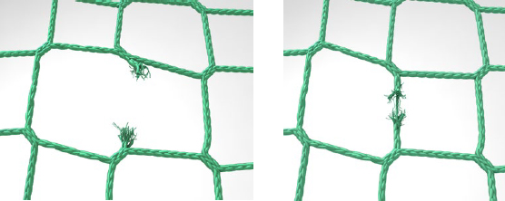

5 Arbeitsplattformnetze
Arbeitsplatzformnetze können geeignet sein, wenn die folgenden Anforderungen erfüllt sind (Standardausführung):
5.1 Materialanforderungen
- Das verwendete Netzmaterial entspricht der Klasse B1 der DIN EN 1263-1, weist jedoch eine Maschenweite ≤ 45 mm auf.
- Das Netzmaterial wird entweder ohne Prüfung der Prüfmasche gemäß der DGUV Regel 101-011 "Einsatz von Schutznetzen (Sicherheitsnetzen)" nur innerhalb der ersten 12 Monate nach Herstellung verwendet,
oder
- die Prüfung der Alterung, der Beschädigung und des Abriebes wird regelmäßig durchgeführt und der Prüfnachweis ist dokumentiert.
- Gurte (Anschlaggurte, Traversengurte) müssen den Anforderungen nach DIN EN 12195-2 entsprechen. Angaben über die zugehörige Spannkraft des Gurtes müssen vorliegen.

Abb. 3 Prinzip eines Arbeitsplattformnetzes
5.2 Konstruktive Anforderungen
- Das Arbeitsplattformnetz liegt nicht tiefer als 1,5 m unterhalb der Unterkante der zu errichtenden oder zu bearbeitenden Konstruktion (siehe Abbildung 4).
- Beim Einsatz von Arbeitsplattformnetzen an Verkehrswegen und Arbeitsplätzen wird eine Absturzhöhe bis 2,00 m in die Auffangeinrichtung (technische Schutzmaßnahme) eingehalten.
- Die Neigung des eingebauten Netzes beträgt nicht mehr als 22,5°.
Anmerkung: Diese Punkte sind bereits im Vorfeld – auch bei der Gefährdungsbeurteilung – als "konstruktive Voraussetzungen" zu berücksichtigen.

Abb. 4 max. 1,50 m unterhalb der Konstruktion (Quelle: Baustein B 105)
- Die Befestigung der Arbeitsplattformnetze erfolgt mit Anschlaggurten im Abstand von höchstens 50 cm. Der Abstand des Netzrandes zur Tragkonstruktion darf maximal (≤) 30 cm betragen.

Abb. 5 Randbefestigung mit Anschlaggurten (Quelle: Baustein B 105)
- Die Traversengurte sind in die Netzfläche eingefädelt, mit einem Durchstich jeweils nach maximal 10 Maschen.
- Die eingefädelten Traversengurte weisen einen Rasterabstand von maximal 2 m x 2 m und einen Abstand zum Netzrand von ca. 2 m auf.
- Die in den Traversengurt einzubringende Handkraft ist über die Ratsche des Gurtes nach Angaben des Herstellers von Hand einzubringen, wobei damit zu rechnen ist, dass pro Anschlagpunkt (inklusive Nutzer) punktuell horizontale Belastungen von maximal 6 KN auftreten können.
Anmerkung: Beim direkten Aufprall auf einen Traversengurt in das Arbeitsplattformnetz ist bei einem Absturz in das Netz mit höheren Kräften in der Konstruktion zu rechnen. Dann sind gegebenenfalls bei der Planung statische Einzelnachweise zu führen und besondere Maßnahmen zu treffen, sofern das Netz auch als Auffangeinrichtung verwendet wird.

Abb. 6 Durchstich Traversengurte maximal alle 10 Maschen (Quelle: Baustein B 105)
Bei verschiedenen Feldversuchen mit unterschiedlichen Testkörpern sind beim Aufprall direkt und punktuell auf einen Traversengurt Kräfte von bis zu 14 KN am entsprechenden Aufhängepunkt gemessen worden.
Je größer die Netzdimensionen (längerer Traversengurt) und unpräziser der Treffpunkt einer Person auf den Gurt ist, desto geringer sind diese eingeleiteten Kräfte.
- Der maximale Durchhang des Netzes beträgt bei Belastung mit einer Person an der ungünstigsten Stelle am Tag der Erstmontage nicht mehr als (≤) 50 cm. Nach dem Nachspannen der Spanngurte am zweiten Tag darf der Durchhang nur noch maximal 30 cm betragen.

Abb. 7 Max. 30 cm Durchhang
- Der maximale Abstand der Unterkante von Lasten, die über das Netz geschwenkt werden, ist auf 3 m zu begrenzen.

Abb. 8 Max. 3,0 m über der Arbeitsplattformfläche (Versuchsaufbau, Konstruktionshöhe unter 2 m)
- Arbeitsplattformnetze werden bei einer regelmäßigen Inaugenscheinnahme auf Beschädigungen kontrolliert.
- Insbesondere sind z. B. Aufstiegs-, Materiallagerungs- und Traversengurt-Durchstichsbereiche zu beobachten.

Abb. 9 Sichtprüfung des Netzes (Anmerkung: Linke kleine Abbildung zeigt zerstörte Maschen, rechte kleine Abbildung den Abrieb an der Masche)